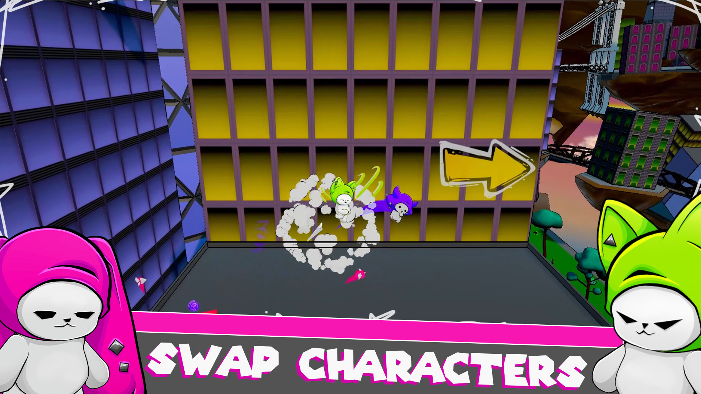
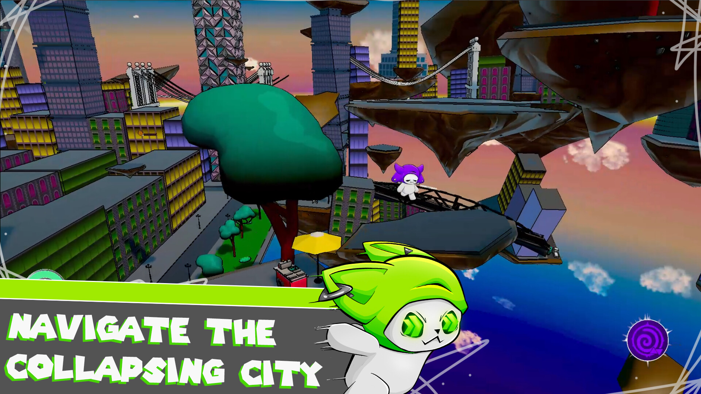
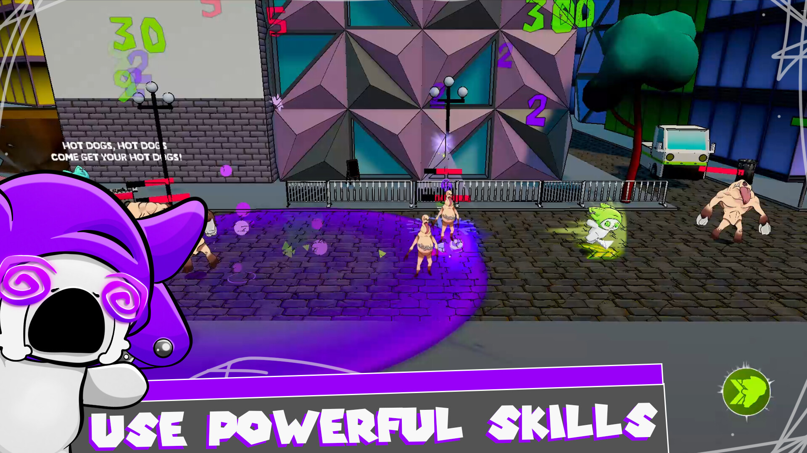
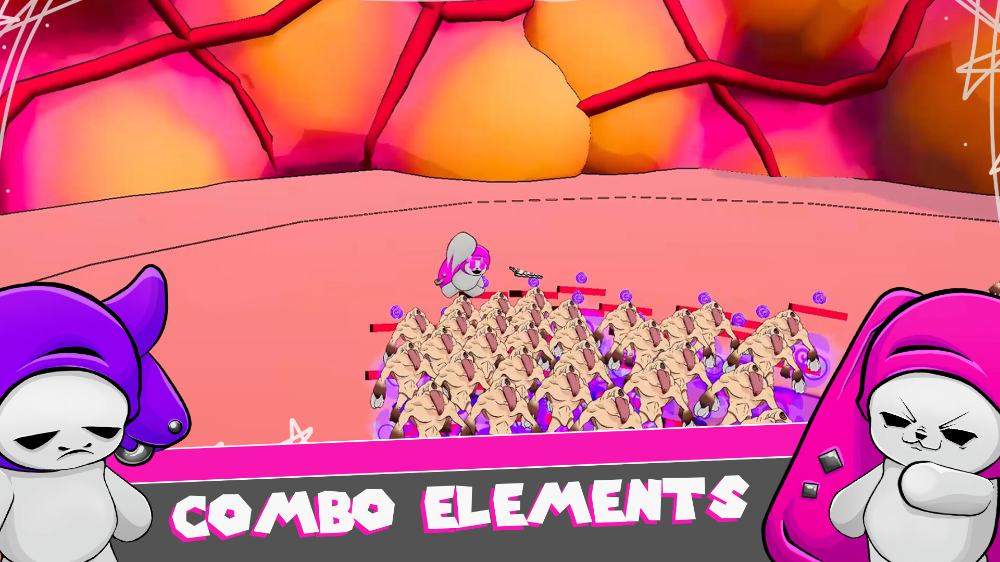

Punk Plush Panic
Play as Zoom, Boom, and Gloom, a trio of colorful heroes with unique elemental powers and skills. As an invasion of gluttonous aliens threatens to destroy their home, they must work together to fight off the invaders and save everyone. Channel the trio's various abilities to fight through enemy and obstacle alike, and combine their powers for explosive combos.
Play GamePlatform: Windows
Engine: Unity
Development Duration: August 2025 - April 2026
Project Role: Engineer
Punk Plush Panic is a chaotic 2.5 platformer in which players swap between 3 characters, using their explosive elemental combinations to fight off waves of gluttonous aliens. Use the unique weapons and abilities of Zoom, Boom, and Gloom to defeat waves of enemies, jump over rooftops, and descend into the alien ship to save your world from destruction.
Trailer
Gallery




Notable Contributions
- Input and player movement
- Screen-to-world aiming system
- Movement queue for character knockback and ability movement
- Player and enemy weapon system
- Player ability system + the three character abilities
- Boss attacks
- SFX System
Post-Mortem
Among the trio of engineers that have been working on this game, my focus has primarily been in gameplay and combat. I was responsible for implementing the three main characters' different kits, including movement, attacks, and abilities. This responsibility also extended to creating reusable underlying systems for each of these aspects so that they can be easily repurposed and extended for other areas of the game. Aside from this main area, I would also fill in for other miscellaneous areas of the game as needed, such as implementing sounds or screen effects or creating environmental hazards.
Since the scale and development time of this game was much greater than the past projects of both myself and the other members of the development team, a big emphasis was placed on modularity when we were designing our various scripts and mechanics. We felt it would be important for our designers to be easily able to drag and drop different scripts onto new assets in order to easily create new content with minimal oversight from the engineers. For some systems, such as our weapon and ability system, this ended up working very well, as we were able to take full advantage of inheritance to easily plug in whatever new ability or weapon we wanted for the player or a new enemy type. However, for other systems like the behavior of "living" entities (the player and enemies), this ended up being somewhat detrimental, as it lead to us creating massive, difficult-to-maintain scripts with multitudes of conditional checks in order to create a "one-size-fits-all" script. These scripts ended up being very difficult to debug and iterate on, especially towards the end of the game's development.
Despite these challenges, we still managed to effectively lay strong foundations for future content additions and systems early on into the project. Additions like knockback, lifesteal, and new weapon types, which were not originally planned at the beginning of the project, were able to fairly easily be implemented thanks to the modularity and extendability of systems like our movement queue, weapon system, and elemental reaction systems. This greatly reduced development time during later stages in the project and allowed us to better respond to more challenging feedback provided by our playtesters.
Looking ahead to future projects, I will definitely be placing a greater emphasis on encapsulation and inheritance based on the difficulties from this game. Splitting up the codebase into smaller, more specialized pieces will allow myself and other members of the development team to more easily isolate issues and expand upon specific features without having to navigate through clunky, unorganized scripts. With that being said, there were definitely some systems developed for this game that will serve as useful templates for future projects. Features like our movement queue, ability and weapon system, and our SFX system will serve as useful starting places for future projects, particularly ones with an emphasis on movement and character-based gameplay.